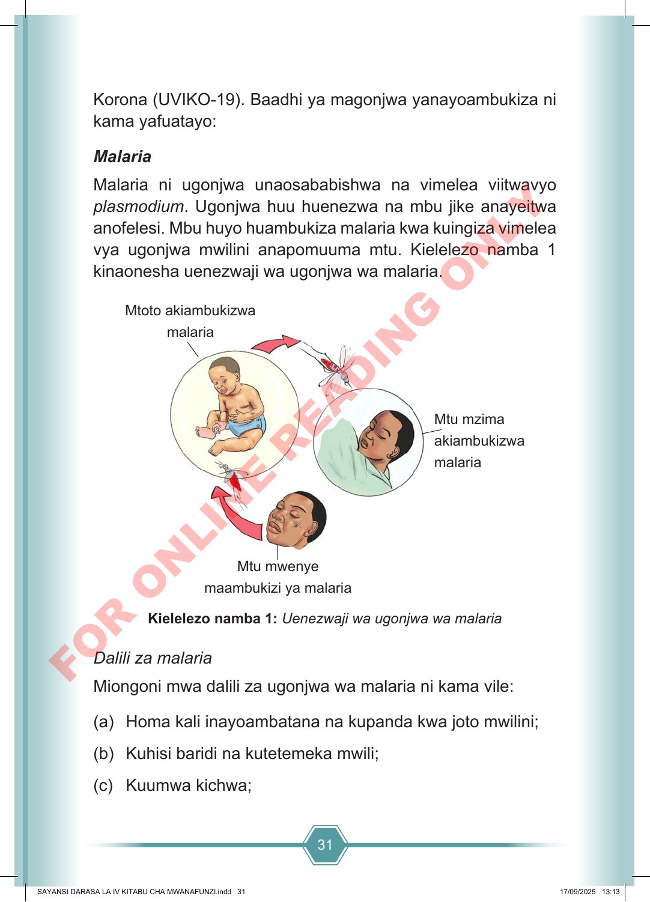

31 Korona (UVIKO-19). Baadhi ya magonjwa yanayoambukiza ni kama yafuatayo: Malaria Malaria ni ugonjwa unaosababishwa na vimelea viitwavyo plasmodium. Ugonjwa huu huenezwa na mbu jike anayeitwa anofelesi. Mbu huyo huambukiza malaria kwa kuingiza vimelea vya ugonjwa mwilini anapomuuma mtu. Kielelezo namba 1 kinaonesha uenezwaji wa ugonjwa wa malaria. Mtoto akiambukizwa malaria Mtu mwenye maambukizi ya malaria Mtu mzima akiambukizwa malaria Kielelezo namba 1: Uenezwaji wa ugonjwa wa malaria Dalili za malaria Miongoni mwa dalili za ugonjwa wa malaria ni kama vile: (a) Homa kali inayoambatana na kupanda kwa joto mwilini; (b) Kuhisi baridi na kutetemeka mwili; (c) Kuumwa kichwa; SAYANSI DARASA LA IV KITABU CHA MWANAFUNZI.indd 31 SAYANSI DARASA LA IV KITABU CHA MWANAFUNZI.indd 31 17/09/2025 13:13 17/09/2025 13:13 F O R O N L I N E R E A D I N G O N L Y